Redrawing the OEA Map
I started with the topic audit of the old site, to see what we had and whether all of it was still relevant.

Planning, designing and building Pratt's education abroad website from the questions in the office inbox.
That was my director, Maria José Soares, describing the Pratt Office of Education Abroad website. She wasn't wrong.
It had 18 top-level navigation items, FAQs scattered across pages, and an office name nobody agreed on. Students called us the “study abroad office.” Our own email address did too.
On April 12, 2026, the new site went live with four navigation items and a very different idea of who it was for.
Before and after: Pratt's education abroad site, after going live in 2025.
The nature of student questions shifted toward more specific, procedural guidance:
Step-level questions
nearly doubled from 26% to 51%.
Introductory sessions
decreased from 51% to 37%.
Among second-years, these sessions
fell from roughly two-thirds to a third.
Pratt's Office of Education Abroad (OEA) helps students go abroad, welcomes students coming to Pratt, and supports faculty who want to take classes overseas. I was hired for website maintenance and administrative support.
The inbox gets 30+ emails and around three one-on-one calls a day, mostly students asking questions. The overloaded inbox and multiple advising calls were a problem for every worker in the office.
The goal was to reduce the number of questions.
And for that, the OEA site had to answer the inbox.
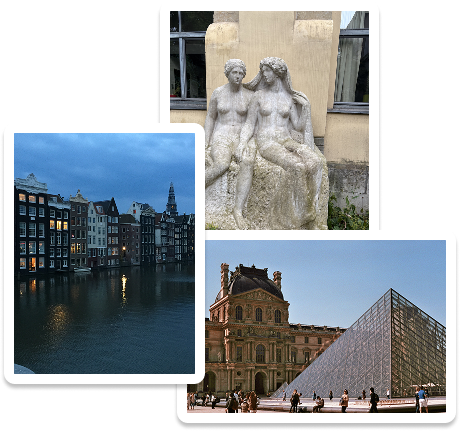
I wanted to know if the site answered the questions we got bombarded with daily.
We got emails asking where to start an application when it was the first link on the page. No one could blame the students, though. The site was set up before COVID and had grown one requirement at a time.
The site had 18 top-level navigation items with jargon like “semester long programs” and guidelines that still had COVID vaccines instructions.
MCSSP's work needed to be seen. Now we needed to find out how to close this gap.
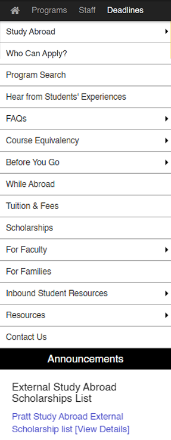
The old menu: 18 top-level items.
While going through Terra Dotta's CMS, I found we had two site builders. The current one was a legacy version. The other (beta) made cleaner pages and could be switched on to replace it.
I showed my team right away. They didn't know anything about it, so they pointed me to the Terra Dotta help desk, and in that meeting I learned Terra Dotta was phasing out the legacy version for this beta.
I also had access to the site code through the beta!
Now that I could mold the site to my liking
I just needed a plan and people to talk to.
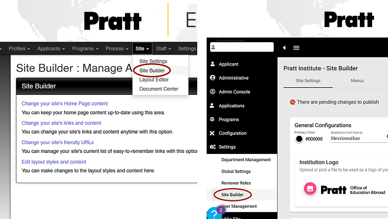
Two Site Builders on Terra Dotta: The legacy site builder (left) and the beta (right).
I wrote a research plan: who I'd talk to, how I'd recruit them, and what I wanted to find out. That meant targeting different groups of students and faculty.
I presented it to the team, and it got better in the room. They added questions to the script and pointed me to the faculty who tend to reply.
Then I sent recruitment forms to students and faculty.
Some sat down for interviews, and others kept a mail thread going. Through them, I finally understood how faculty actually work. They didn't know many of the guidelines or how to use Terra Dotta to manage students, one of their primary responsibilities.
Not the interview requests, not the testing, not even the recruitment form. I waited for a month and a half, maybe two, sending reminders. Nothing came of it.
Suddenly, there was a huge issue.
I had no information from our primary audience.
With 30+ emails coming in every day, the inbox was a ready-made data set, if I went back far enough.
I went back through the inbox and
logged bi-weekly from August 2024, to get seasonal questions.
As part of the admin work, I was also being trained to advise students over calls.
When I started taking the calls on my own
by mid March, I made notes of frequent student issues and concerns.
Conveniently enough, our office had an ongoing project with IT: a chatbot to answer student questions.
To feed it, the team was
logging frequent student questions over inbox, calls, and walk-ins.
Now, with a solid repository at hand, I could make the site answer the questions
and make sure students find the answers this time.
I grouped the repeated FAQs into pain points. To check if the old site was addressing any of these problems, I audited the whole site by listing every topic mentioned and saw two trends:
Faculty-led students and incoming exchange students didn't have much content dedicated to them. If there was anything, it was outdated.
Outbound exchange students emailed us questions that the site already answered, such as where to start an application. Faculty also asked how to promote their programs when the faculty section already had a request form.
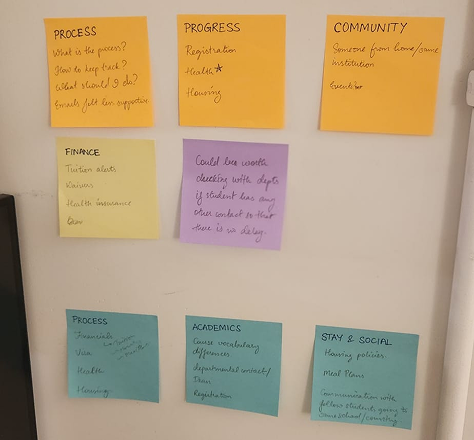
Sorting months of repeated questions into groups.
If our main user groups couldn't find anything, it's unlikely parents or guardians could either.
So how could we actually make everything findable?
I wasn't the first person to build an education abroad site. So I went through our partner schools' websites.
Most were organized by audience with labels like “Going Abroad” and no “semester-long programs” jargon.
Audience-first, plain labels, faculty-led items somewhere obvious. That was the pattern to build from.
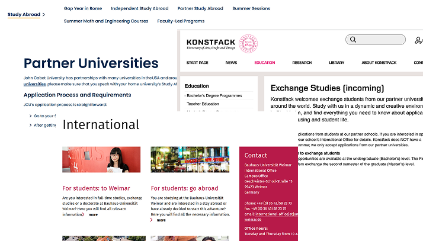
How our partner schools organize their sites
Schools(right to left): John Cabot Univerity, Bauhaus-Universität, Konstfack University
I started with the topic audit of the old site, to see what we had and whether all of it was still relevant.
Nobody interacted with our Discord, Twitter or YouTube, but Instagram had more traction.
It's 2025. Goodbye.
It made more sense to work them into the pages where they're relevant. So this page was cut.
This page was a table of dates which students didn't notice. When I made a workaround banner on the old site, it brought a rush of applications. So I proceeded with closable deadlines banner.
The label was jargon, and the content under it had to be rethought, so it didn't carry over as it was.
I sorted what was left into audience groups, like the partner sites did. Four came out: Outbound Students, Inbound Students, Faculty, and Resources.
Inbound and Faculty were nearly empty. Those were the gaps, and faculty-led programs needed a home too.
I laid this out in the order a student moves through it: from how to study abroad to how the whole process looks like and finally, things to know before you go.
Faculty-led got a jargon-free label of Pratt Programs Abroad.
Exchange and faculty-led students both needed a “Before you go,” so the final content would have to be generalized.
Green is what the old site never covered.
These were the two columns that were nearly empty.
Inbound students only hear about the process once they're accepted. So I built a preview for them on what to expect at Pratt and how the process is to be accepted.
Faculty content got grouped by workflow. I also added a Terra Dotta tutorial section, because faculty waiting on us to manage their rosters was a major pain point in the interviews.
Green is again what I added.
The home page needed a program search. I also wanted a highlight reel and a question form if possible.
The footer's quick links send people to FAQ and the other important audience pages.
Resources has everything else: FAQ, financial resources, support, contacts and testimonials.
Emergency numbers went out in a document and weren't searchable which was a big risk. So the old staff changed from a list of names and emails to one with the emergency numbers.
*Note: I was trying to synthesize all the data into groups that made sense to me and everyone at the office, so these were working labels. The plain-language versions were finalized around the time of content creation.
We had the sitemap, and were now ready for the site.
I couldn't just dive into any section, so now I needed an action plan.
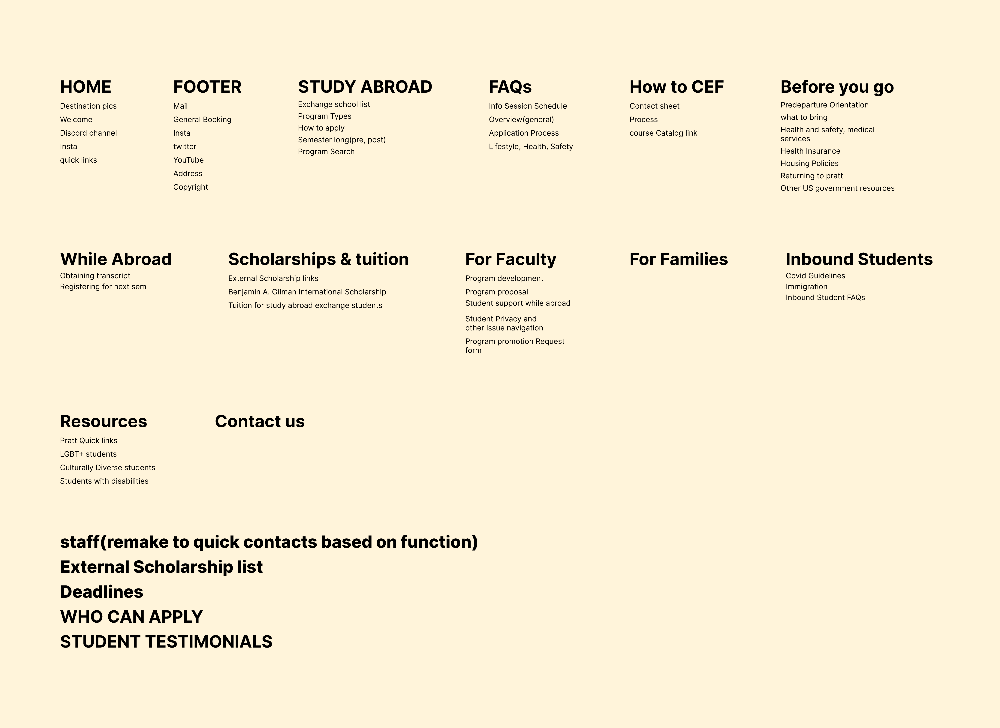
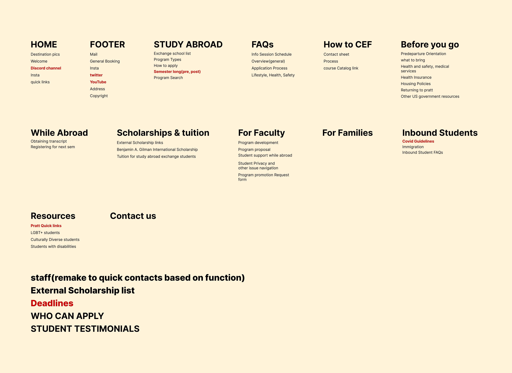
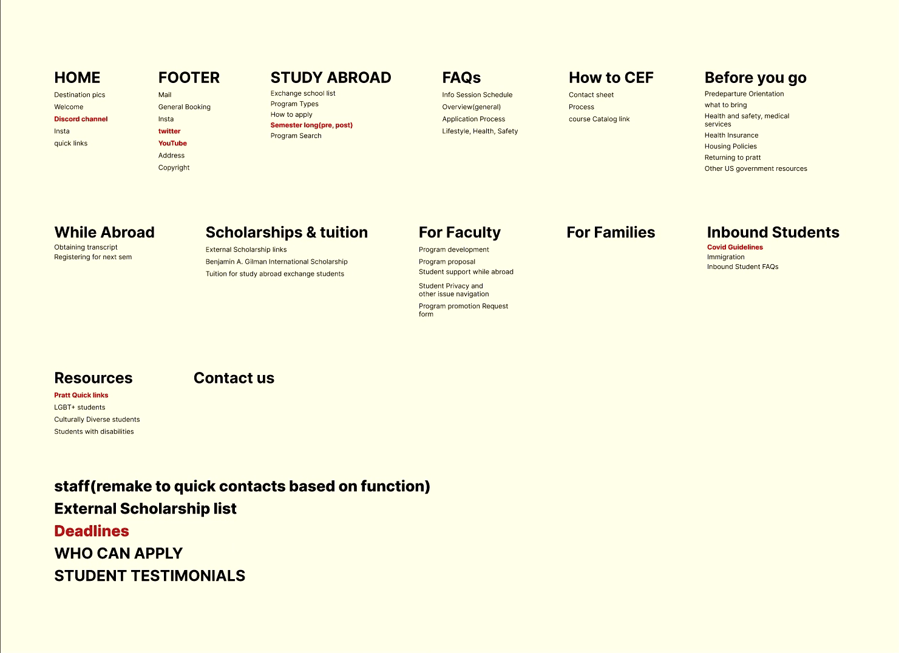
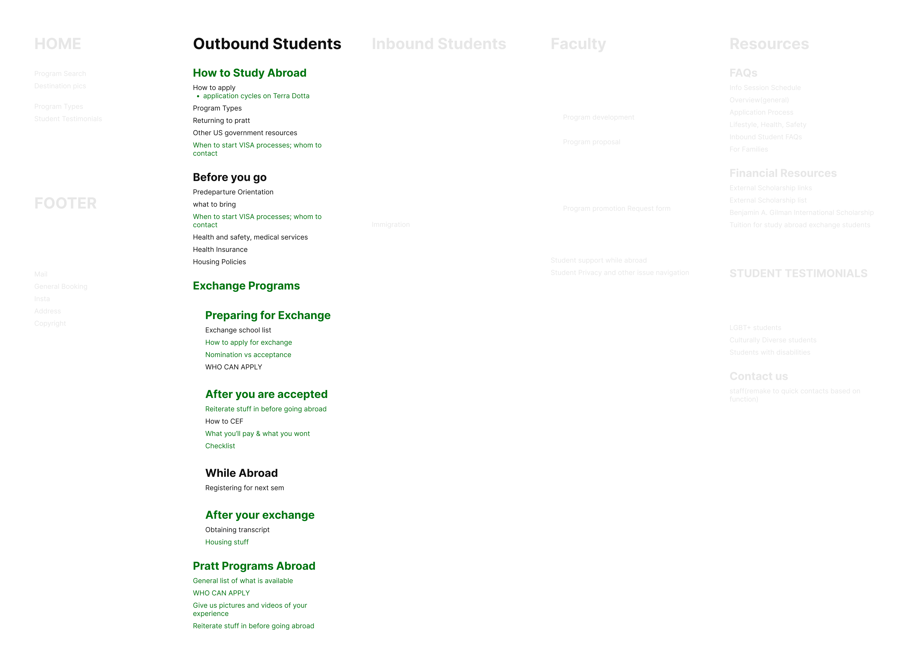
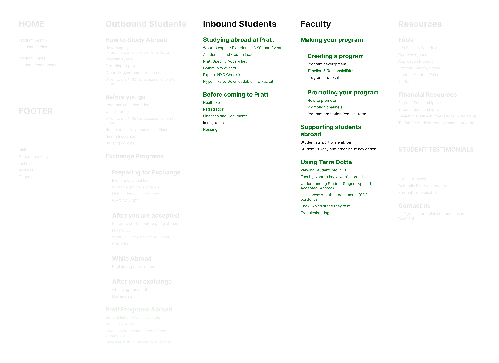
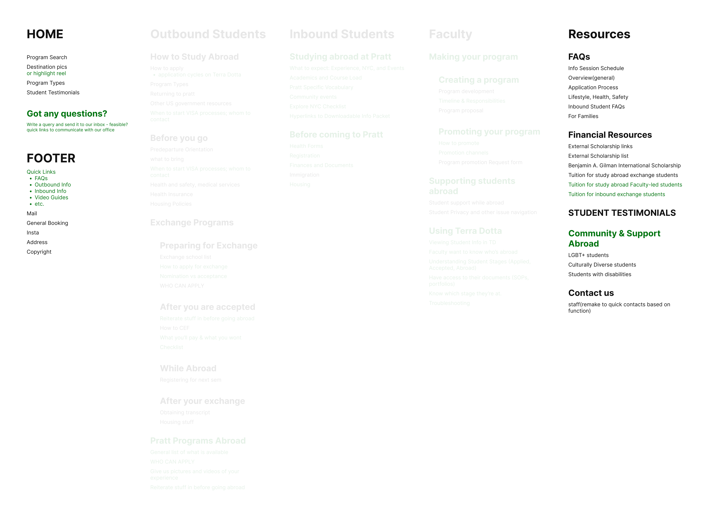
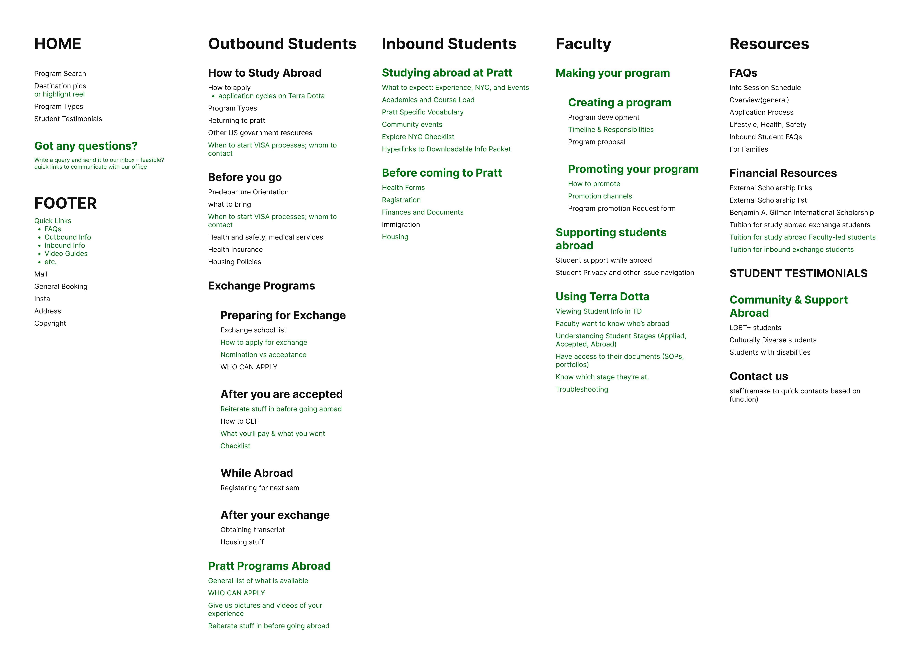
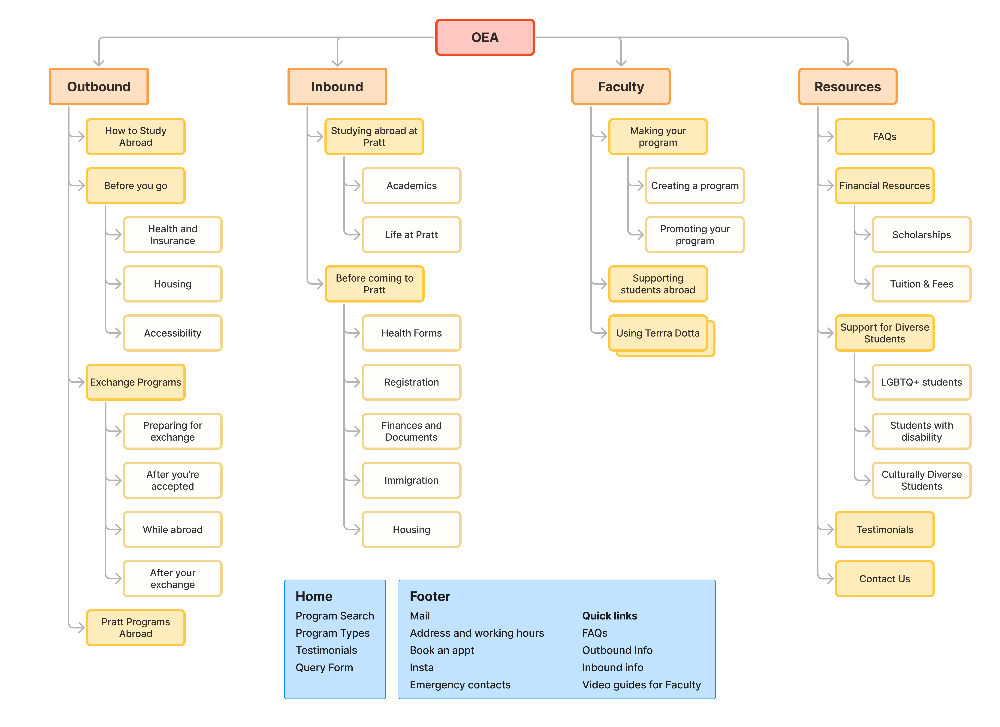
I ran the sitemap by the team. It was their first time seeing one, so it took a while to help them picture it.
I proposed building the site in order of who met OEA first. They agreed, and we divided the sitemap into four phases.
Phase 1 was the Outbound Students, along with the home page, footer, financial resources and contacts estimated to complete within the fall semester.
And this huge step started with a home page.
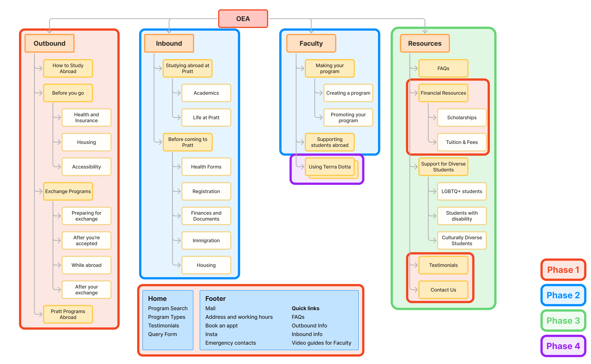
Phase 1 started in fall, and fall at OEA is hectic. We had event after event, so every free moment went into the home page and footer. It disgustingly took a whole 15-week semester.
The home page had one job: route every audience to the right place.
Program search was the main action on our site, so it went in the hero.
Behind it is a highlight reel of student videos from past programs, like a trailer for the experiences to be had.
While I had the vision, the harsh truth was that the CMS didn't support videos.
A static image wouldn't excite anyone, so I tried to find other ways to host a video. I finally landed on embedding a Vimeo video.
Then I hit a different wall: I couldn't make the video myself. I told my director I was struggling, and she connected me with Pratt's media team. They finished it in 2 days.
Pratt students who arrive knowing nothing get a short intro to how it works, with a link to learn more.
Introductory sections for inbound students, faculty, and parents weren't made, since we were only in Phase 1.
Students kept asking to talk to alums about their experiences and financial guidance, but the old testimonials were long interviews they only saw those if they had time.
So the new ones are short excerpts from real experiences, with a button to read more.
The footer gives students quick links to book an appointment, contact us, find tuition and financial aid information, and revisit the outbound pages.
Early in planning, I thought a question box in the footer could help students get quick turnaround.
Terra Dotta didn't have forms, so I built it using Google Forms, which the office could maintain. I connected it to our inbox using Apps Script, and added it to the footer so it appeared on every page.
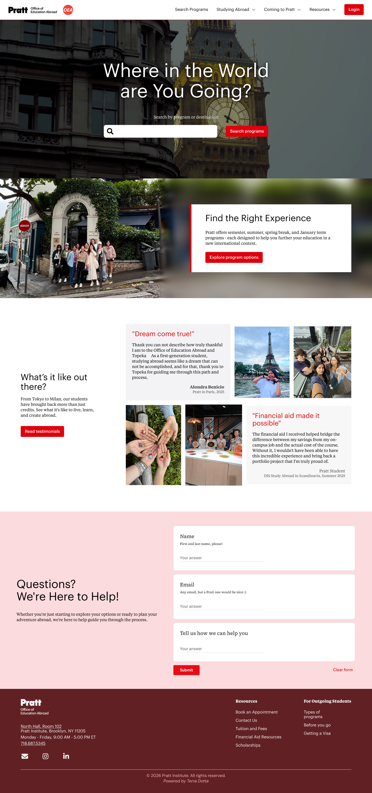
The front door was up.
Now the pages behind it needed words.
I wrote most of the copy myself. The old copy was outdated or needed a jargon-less refresh. I started with the outbound pages, then drafted the rest as staff reviewed the content for facts and corrections. Relevant Pratt offices reviewed it too, with final approval from my director.
My process was to write the rough copy, use AI to polish it, then review it. As a part-time worker on a project this huge, I had to rely on AI to get things done on time.
Words done. Now they needed a look.
I started designing with our office red (#F84139) as the OEA brand color. It's in our logo and our promotional materials.
I borrowed the lighter and darker reds from Pratt's visual guidelines to build out a color system. I had two concerns: accessibility, particularly color contrast, and adherence to Pratt's guidelines.
But with the graduation deadline approaching, accessibility took a lower priority. I figured the audience would be fine since Pratt is a design school (uh oh!).
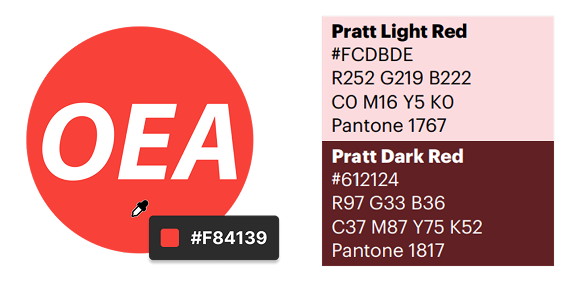
Color System: OEA red, plus Pratt's lighter and darker reds.
I referred to the Pratt website to reuse its existing components and keep the OEA site within the same visual ecosystem.
Where the existing components fell short, I made my own.
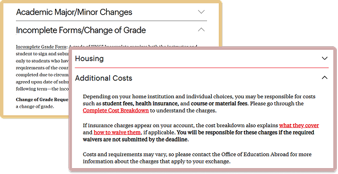
Components: Pratt's accordion, and the one I made for OEA.
The outbound section was ready to build, but the contrast and guidelines concerns kept nagging me. It was during an assignment for my accessibility class that it hit me:
I'd been wrong to assume Pratt's audience didn't need accessibility.
I had classmates who designed beautifully but were colorblind. Then I thought of the parents and guardians who could be visually impaired and reading the site too.
I had to resolve the red.
Clarification was due for two reasons.
Pratt's guidelines recommended yellow, black, gray, and white for offices, though resources could use other colors. I considered OEA a resource, but I needed to confirm.
The OEA red failed WCAG AA contrast (3.6:1 against white, AA needs 4.5:1). But the office had come to be associated with that red.
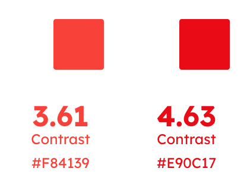
The OEA red fell short of the 4.5:1 AA contrast ratio. The adjusted red passes.
I asked Pratt Communications and Marketing (PComm) whether I could use the red and flagged its contrast.
PComm encouraged me to use red to broaden the Pratt umbrella, and helped me find an accessible red within the system (#E90C17). They flagged one thing though:
I'd need to use Pratt's fonts or the substitutes listed in the guidelines.
Colors were sorted. Now I had to find a font workaround and build this thing.
So I started building out the site.
The guidelines recommended Graphik and Tiempos, but neither they nor their substitutes were in Terra Dotta's CMS.
I'd settled on DM Sans and Merriweather, but PComm required Pratt's fonts or the listed substitutes.
So I worked out how to import the Pratt-hosted font files and applying it to the site by overwriting variables.
I showed PComm the plan and the code, and they okayed it.
But some elements ignored the variables completely. Buttons and the nav bar were the worst, so I forced the
fonts with !important.
Before and after the font import.
The old site let me nest menus more than two levels deep. A student could reach any topic in a click or two. I assumed the beta worked the same way and designed the pages around it.
I was wrong. The beta only went two levels. A menu could open to a list of pages, but those pages couldn't open to lists of their own.
I had designed Before You Go, Exchange, Financial Resources, etc. to be split into subpages, so the one-click path was gone.
Combining them made each page very long, so I built my own secondary nav inside these pages.
The secondary nav I built inside the page.
Terra Dotta's default components didn't match Pratt's. I overwrote them on the home page and footer, but doing it page by page got ridiculous fast.
Then I found I could upload global CSS. I maintained a global CSS doc, so every page picked up the changes.
But some components fought back. The !important overrides carried on here.
The catch: the page preview broke, so I couldn't see changes while working on it. Every change meant saving it and checking it on a test link.
Buttons and menus after the global CSS overrides.
After solving these issues one by one and testing it within the team,
I decided to go live with the site. It was finally done!
Pratt students browse on many devices: tablets they draw on, 4K monitors they edit on, and phones on the go. Once the pages were built, I styled the mobile view in a day.
Tablet is functional but needs fine-tuning. The nav bar under 778px is CMS-controlled and isn't styled properly. The program brochures don't listen to the global styles yet.
None of that made the site unusable.
So I published the site with 10 pages. And people noticed!
June 1 to October 19
These are small samples from one cycle on the new site.
It's not proof, but it's a signal.
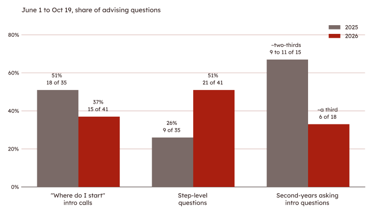
Small samples from one cycle: introductory questions down, step-level questions up.
I graduated in spring 2026 and became a temporary program coordinator in July. The incoming students' pages went live on July 20.
A new GA joined that month, and I trained her on the faculty page. She finished the faculty resources in September, and now we're giving intros for the other user groups on the home page.
The FAQ search (an iframe tied to a Google Sheet anyone in the office can edit) and guidelines for marginalized communities. Tablet, brochure, and other kinks are on the list too.
Students who applied last year, the Provost's office, departments, and even our international partners said it was clear and easy to understand. Partners liked having a Pratt resource to show prospective students, and parents, chairs, and professors started getting answers from the site too.
Reflecting on my process, most of my mistakes were assumptions: about students and about accessibility. Some days I wished I had someone to discuss with before they became mistakes.
A class project has deadlines, professors and peers to turn to when something isn't working. This had none of that. I loved the project and how far it pushed me. I didn't love the loneliness.
In the end, what kept me going was the team.
They were quick to respond, they prioritized the reviews I sent their way, and despite being overworked, they were always there to help.
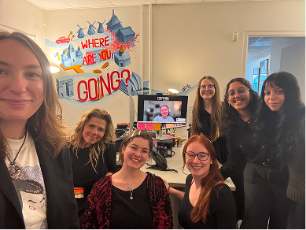
The OEA team. The people who kept me going ♥